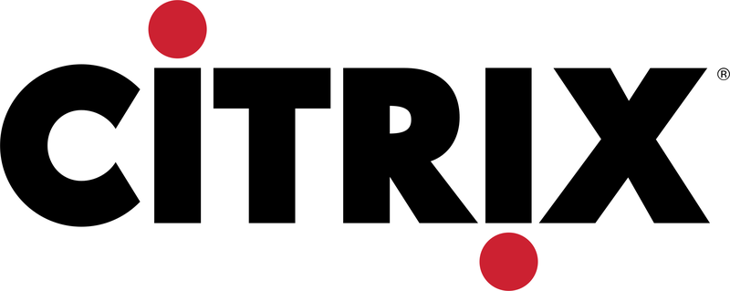

Work history
Where I've worked and what I've done.
Here's a bit more about my work history.
Companies

Citrix
Here I built and managed Financial reporting systems using the Microsoft BI stack.
LogMeIn
Here I led Marketing Data and Analytics teams focused on product-led growth and trial signup/conversion.
AppFolio
Here I built, led, and scaled the entire Data capability and org from soup to nuts.